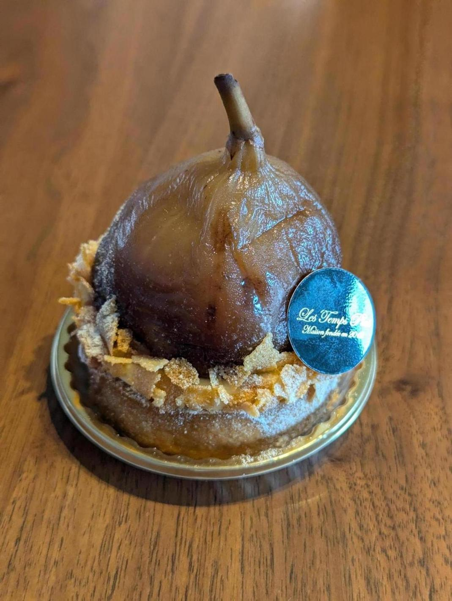

昨日の話。
今台風10号が西日本にちょうど着弾しているのだが、それはそうと飲み会の予定があった。前の会社の人達との飲み会。 台風は関東地方には来ていないのだが、湿った空気の影響でこの日は飲み会会場である、私の家付近の店のあたりは朝から大雨だった。
ちなみに何故会場が都内とかではなく私の家のあたり（都心から電車で1時間以上）かというと、前回同じ感じの飲み会があったときに私がゴネたためだ。このメンバーの飲み会は私が前の会社を辞めると決まったあたりに発足したのだが、その日がホワイトデーで妻にチョコをあげないといけない私は都内での飲み会を避けたかった。そこでゴネたらみんなが私の家の方まで来てくれることになったのだ。なんていいやつらなんだと感動した。
で、昨日その飲み会の予定があったのだが、朝から大雨が降っていた。しかもニュースによれば、神奈川や都内では道が冠水していたりしたらしい（私の家は千葉）。 私はこの日もともと仕事を休みにしていて、適当に過ごしつつ髪を切る予定があった。髪を切ったあとに飲み会に行くつもりだったのだが、この雨では都内から人を集めるのは厳しいのではと感じ始めていた。
仮に台風の影響で道の冠水が千葉でも発生したりすると、電車が止まることが予想されるし、車も走れなくなるだろう。その状況は極めて危険だ。冷静に考えると、飲み会会場の駅がある路線はつくばエクスプレスといって、首都高みたいに上空を走る電車なので、道路が冠水してもあまり関係ないのだが、停電リスク等もある。
このことから、私は当日の朝、大雨が降る外を窓越しに見ながら飲み会の延期を提案した。この案はすぐに受け入れられ飲み会は翌週以降に延期となった。
これが判断ミスだった。
雨は昼くらいに止んだのだ。 髪を切る予定が14時だったのだが、12時くらいにふと家の中から外を見たところ、あれ止んでるな？と思った。
まあでも台風のときとかって雨が強まったり弱まったりするし、そのうちまた降るだろう、、と思いつつ髪を切りに行った。 髪を切っている間も外を見ていたが、雨は完全に止んでいた。不思議なこともあるものだ。人間は自然には勝てないのだと感じた。
いやーこれ飲み会やれたな、と思いつつ、まあもう中止になったしなと思って、銭湯に行った。何度か書いてるが、私は金曜には銭湯に行くことをルーティーンにしている。
金曜に仕事が終わったあとに銭湯に行く人生。これはかなり理想に近い。しかも昨日で、ポイントカードが20ポイントたまり、次回1回無料で入れることになった。
銭湯の露天風呂に入りながら、飲み会やれたな、と思った。まあでももう中止になっちゃったし、今日は銭湯でゆっくりして、夜も家で、最近フジテレビオンデマンドで見ている「放送禁止」か、昔の「世にも奇妙な物語」でも見てのんびりしよう、、と思った。
私が行く銭湯は、風呂とは別に2階にリラックススペースみたいなのがある。そこには漫画が結構いっぱいあって、一人がけのソファ的な椅子に寝っ転がってどれても読めるようになっている。風呂を出た私は「ワンパンマン」を手に取り読み始めた。
ちなみに私の妻はここで「テラフォーマーズ」を読んでいるらしい。
ワンパンマンを読んでいたらスマホの通知が鳴り響いた。
なんと飲み会をやっぱりやるという。
私は目を疑った。
だってもう中止になったし、髪切って銭湯に入って、寝っ転がってワンパンマンも読み始めてしまっている。こうなったらもう普通その日は店じまいの道理である。「放送禁止」も見たいし。
しかもこの飲み会は焼肉屋でやるのだ。
焼肉屋に行く前に銭湯にいくバカはいないだろ、と思いながら、私は本当に申し訳ないいう気持ちでLINEに気づかなかったふりをすることにした。たぶんこれは看破されていたようで電話まで来た（出なかった）。
とりあえず飲み会までは時間があるし、ワンパンマンを6巻まで読み、帰ることにした。
ワンパンマンはギャグバトルアクションという感じで面白かった。バトル漫画として定番の、あるあるな展開が多く散りばめられつつ、最後はサイタマがワンパンで倒してくれるカタルシスが心地良い。キャラクターの個性がどれもとても良く、今後も通って続きを読みたいと思った。
さて、家に帰った時点で飲み会の7時位になった。 妻には「飲み会は中止になった」と伝え、家で食事をし、歯磨きを済ませた。
まだLINEが来ている。
こいつらマジでやってんのか、、と思いながらLINEを開く。 妻に相談したところ、せっかくこっちまで来てくれてるんだし行ってきなよ、とのこと。 ここで45分程度葛藤した。いやーもう歯磨きもしちゃってるしな。でもここでマジで行かなかったらさすがに悪いな。せっかく都内から来てくれている人もいるし。あと書き忘れていたが、この飲み会は本当は先週の予定だったので、もう一回リスケはさすがにダレるし、そもそももう本当に家の近くでやってるわけだし、、
私は行くことにした。
行ったら楽しかった。私は普段リモートワークしてるのでこういう場は楽しい。ひとり結婚してるやつまでいた。めでたい話はいいものだ。
ここから今日の話。

レタンプリュスでいちじくのケーキを買って食べた。いちじくは美味い。
ワンパンマンの続きを読むために銭湯に行ってしまったが、4冊読んだところで続きが誰かに取られており帰宅。近くの女の人が読んでいた。すぐに読まないのに数冊確保するのはやめてほしい。私が行ってる銭湯は若干安いせいか、変な人が多い気がするので、今後は近くの少し高い銭湯に切り替えるか検討している。